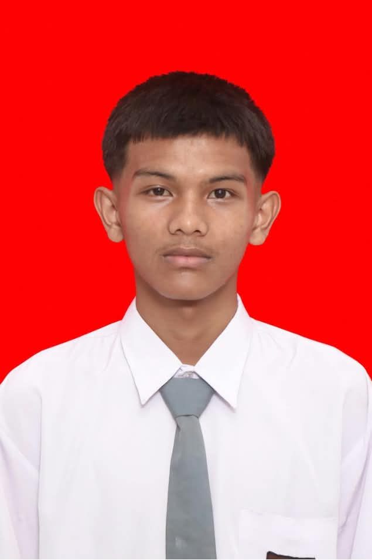
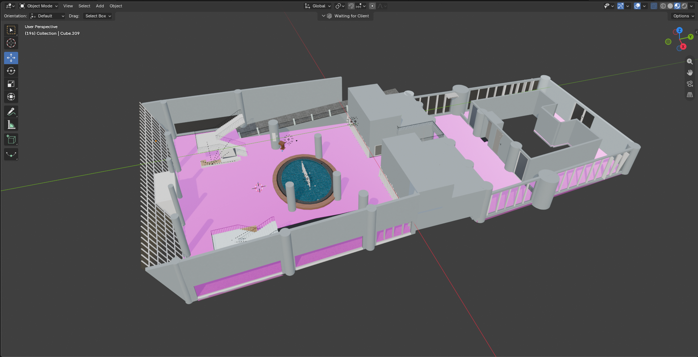
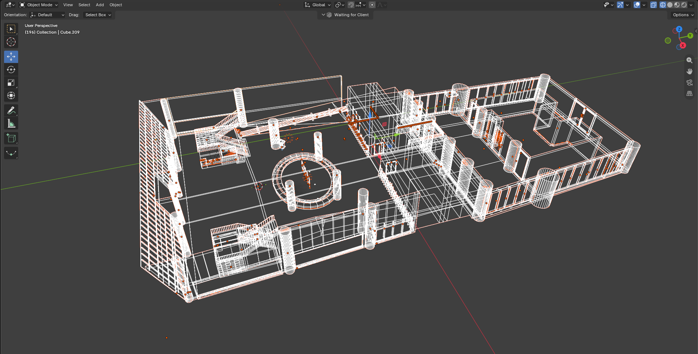
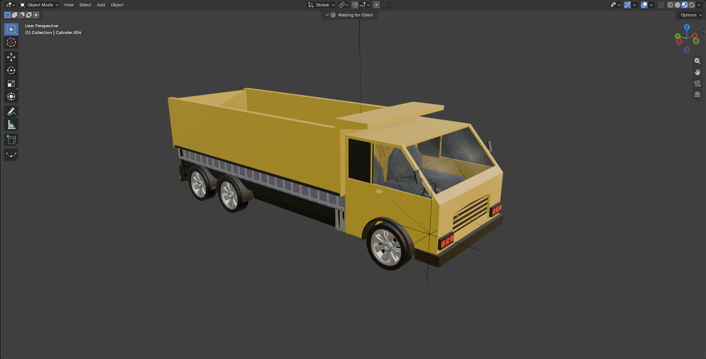
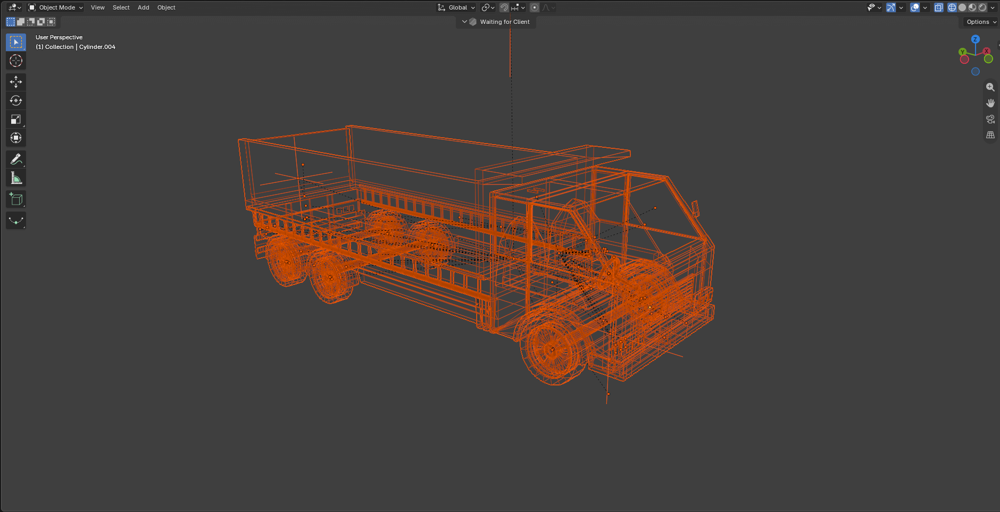
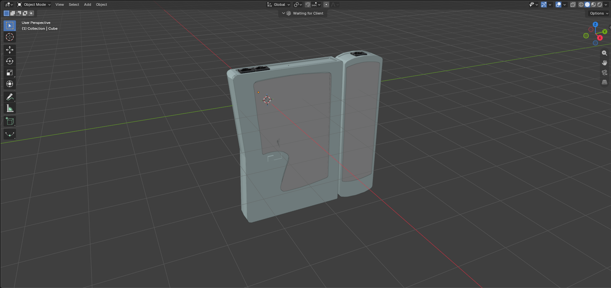
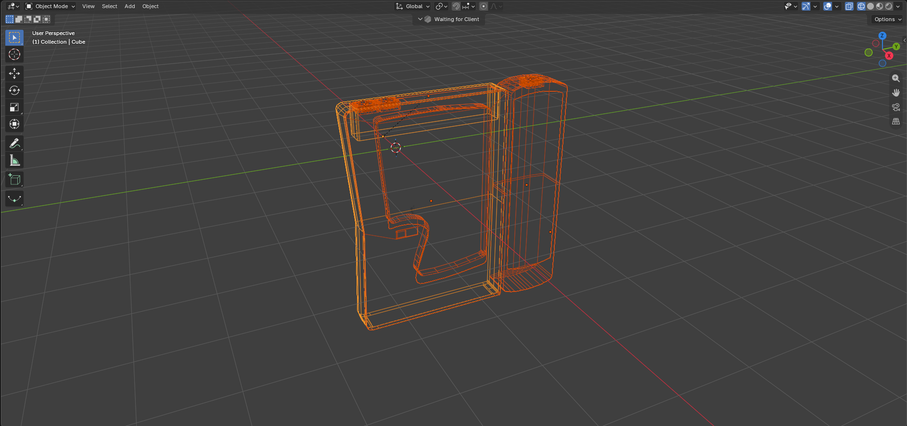
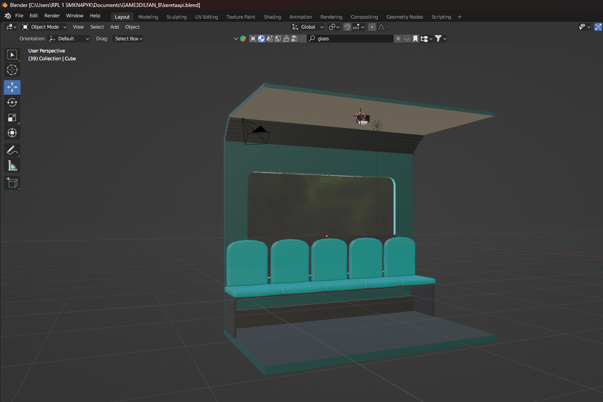
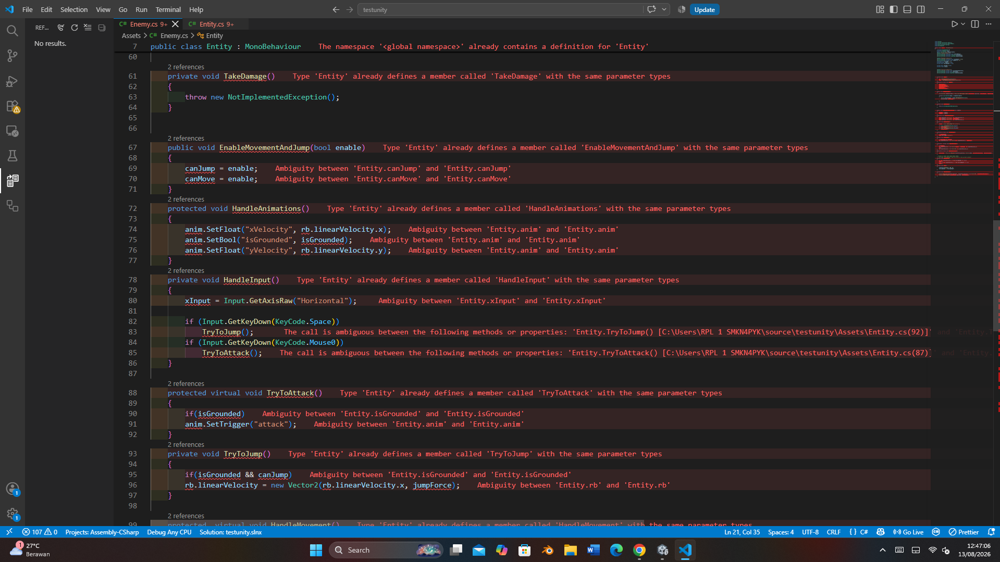
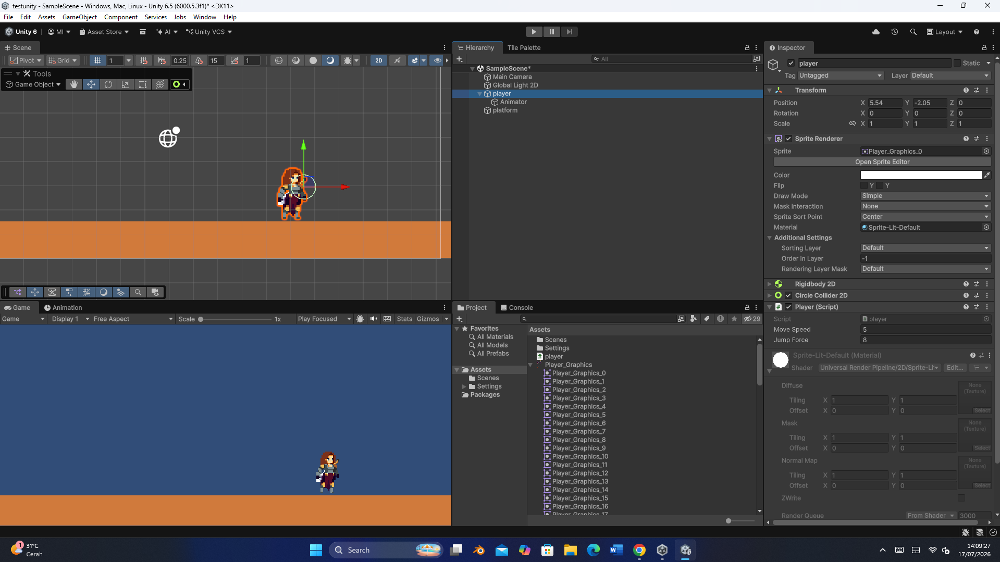

Foto 1 dari X
Klik foto atau panah untuk lanjut
1 / 10
Pengembangan Perangkat Lunak dan Game (PPLG)
Junior Game Developer & 3D Specialist yang antusias untuk mengaplikasikan kemampuan teknis di industri profesional. Terbiasa mengoperasikan Blender 3D dan memiliki kemampuan dasar pada unity engine. Mampu bekerja secara terorganisasi, cepat beradaptasi dalam memecahkan tantangan teknis, serta memiliki kemampuan kerja sama tim yang solid untuk mendukung target proyek perusahaan.

Hasil Proyek
3 Game
3D
Spesialis Low-Poly & Assets
TEFA
Sekretaris TEFA Binary Coding Space
Dokumentasi
Ketua tim dokumentasi TEFA Binary Coding Space
KOMPETENSI TEKNIS
Software, bahasa pemrograman, dan Software yang saya gunakan.
KARYA
Dokumentasi screenshot.


Bertanggung jawab sebagai 3D Artist dalam tim untuk membuat serta mengoptimalkan aset 3D museum PDRI menggunakan Blender agar responsif dan imersif pada proyek gim VR.


Bertanggung jawab sebagai 3D Artist dalam pembuatan model 3D alat berat dan aset lingkungan berpresisi tinggi menggunakan Blender untuk proyek gim simulasi desktop.


Merancang dan mengoptimalkan aset 3D menggunakan Blender sebagai 3D Artist untuk mendukung proyek gim edukasi AR simulasi instalasi jaringan.
DOKUMENTASI BELAJAR
Beberapa hasil screenshot saya saat belajar Game Development



REKAM JEJAK
SMK Negeri 4 Payakumbuh
Memegang kendali atas administrasi dan operasional tim, mulai dari pendokumentasian alur kerja harian, pencatatan presensi anggota, hingga pengelolaan dan penyelenggaraan berbagai agenda acara kegiatan.
SMK Negeri 4 Payakumbuh
Memimpin dokumentasi kegiatan jurusan, pembuatan materi publikasi, dan arsip media.
SMK Negeri 4 Payakumbuh
Menjalankan tugas sebagai anggota developer game dalam bidang 3D Asset.
Pengembangan Perangkat Lunak dan Game
Berfokus pada pengembangan diri dan penguasaan teknologi di bidang Game Development.